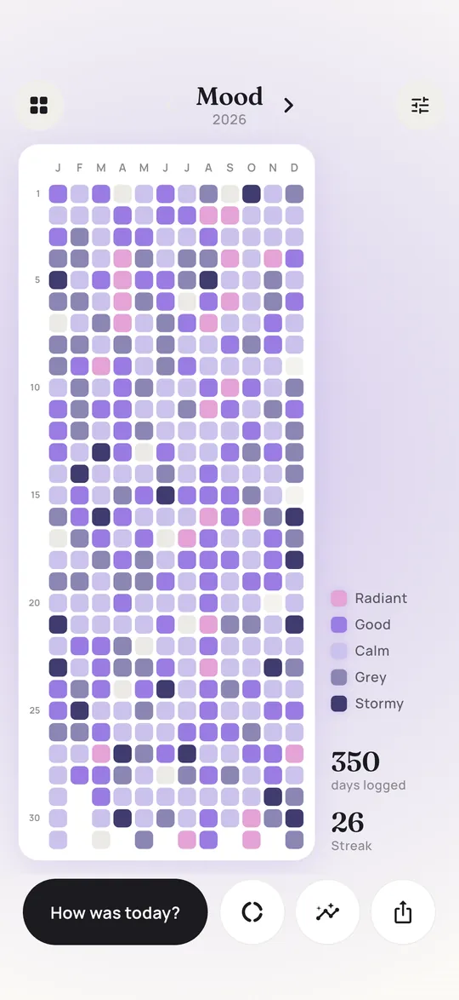
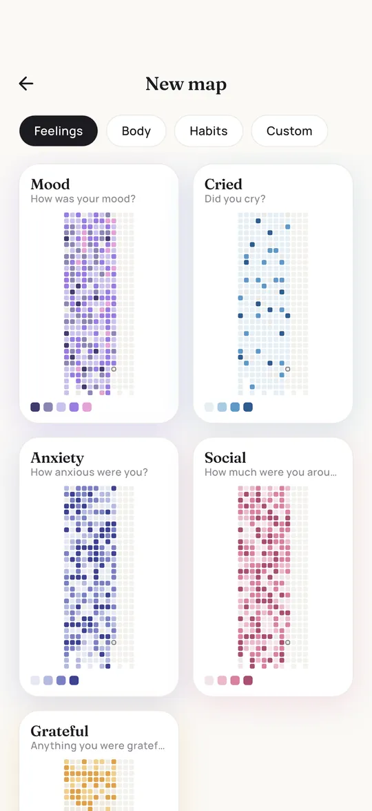

Year in Pixels color key: how to pick colors that work
The key is the small legend that tells you which color means what. It decides whether your finished year looks like a clear picture or like confetti. Here is how to build one, with six palettes you can copy.
How many levels?
Every extra level makes the picture richer and the daily decision harder. When you hesitate between two colors every evening, you will start skipping days. A good rule: as few levels as you need to tell days apart, and never more than six.
| Levels | Good for | Example |
|---|---|---|
| 2 | Yes or no questions | Exercised, did not exercise |
| 3 | Habits with an in between | Not today, A little, A lot |
| 4 | Intensity | None, Mild, Strong, Very strong |
| 5 | Mood and sleep | Awful, Low, Okay, Good, Great |
| 6 | Categories | Sunny, Cloudy, Rain, Snow, Storm, Fog |
A scale or categories?
This is the one decision that makes the biggest difference, and most keys get it wrong without noticing.
A scale is for answers that have an order, like sleep from bad to great or energy from empty to buzzing. Use one color family from light to dark. Your eye reads darker as more, so a dark week stands out immediately, and you can see trends at a glance.
Categories are for answers without an order, like weather or the kind of dream you had. Here you want clearly different colors that do not suggest a ranking. A rainbow is fine for categories and confusing for a scale.
Mood sits in between. Many people use a rainbow key with one color per feeling, which looks lively but makes it harder to see whether a month was better or worse. A scale from dark to bright shows the ups and downs much more clearly. Pixi uses a scale for mood for exactly that reason.
Six palettes you can copy
The first five are the palettes used in the Pixi app, tested on a full year of data. The sixth is the classic rainbow mood key from bullet journals.
- Pixi Mood, a calm purple scaleMood or anything from bad to greatStormy#3F3B6EGrey#8A86B3Calm#CBC2ECGood#9A7BE3Radiant#E4A3D6
- Night bluesSleep, rest, calmLay awake#ECE8F1Restless#B9BFDCOkay#7E8AC2Restful#465298Like a rock#1F2553
- SunriseEnergy, motivation, productivityEmpty#F3E7DDSluggish#F3C8A6Awake#EE9A62Buzzing#C9612E
- ForestExercise, steps, time outsideCouch day#E7EDE2Walk#B9D5A6Workout#74AE66Beast mode#3D7A45
- Dream colorsCategories without an orderNone#E9E7F0Peaceful#ABC0E6Adventurous#6E7FD6Surreal#9C73D2Romantic#E39DC4Nightmare#2A2546
- Classic emotionsA colorful mood key with one hue per feelingHappy#F2C94CCalm#7FB77ESad#5E98C9Anxious#9C73D2Angry#D9534FTired#A3A3AB


Classic emotion colors
If you prefer one color per feeling, these associations are common in Western bullet journals. They are conventions, not rules, and color meanings differ between cultures and people. If yellow feels anxious to you rather than happy, use it for anxious.
| Color | Often used for |
|---|---|
| Yellow | Happy, energetic |
| Green | Calm, content, balanced |
| Blue | Sad, low |
| Purple | Anxious, stressed |
| Red | Angry, frustrated |
| Grey | Tired, numb, meh |
| Pink | Loved, romantic |
Rules for a key that lasts all year
- Test your pens first. Color a swatch of every pen on the paper you will use. Two markers that look different in the shop often look the same on paper.
- Keep enough contrast between neighbors. If you need to squint to tell two levels apart, merge them or pick a darker pen.
- Do not rely on red versus green alone. Red green color blindness is common. Make one of them clearly lighter than the other, or use blue and orange instead.
- Keep white for no data. Then an empty box means you did not record the day, not that the day was blank.
- Order the key the same way every time. Low at the top, high at the bottom, or the other way round, but consistent across all your grids.
- Write the labels, not just the colors. In December you will not remember whether light purple meant okay or good.
Common mistakes
- Too many shades of one color. Seven blues are beautiful in the key and unreadable in the grid.
- Changing the key mid year. If you must, mark the date and add a second key, so the picture still makes sense later.
- Using the brightest color for the worst days. Bright colors pull the eye. Let your best days shine, not your worst.
- A key with no middle. If every day has to be good or bad, you will hesitate on most of them. An okay level saves you.
Questions and answers
What colors should I use for a Year in Pixels?
For mood, sleep or energy use one color family from light to dark, so you can read trends. For categories like weather use clearly different colors. Always test your pens on the paper first.
What does each color mean in a Year in Pixels?
Whatever you decide. There is no official key. Common choices are yellow for happy, blue for sad, red for angry, green for calm and grey for tired, but a light to dark scale often works better.
How do I make a Year in Pixels key?
Pick three to six levels, give each a short label, choose a pen for each and color the key boxes before day one. Write the label next to every color.
Which colors are good for color blind people?
Avoid telling levels apart only by red versus green. Use light to dark scales of one hue, or combine blue and orange, which most people with color vision deficiency can tell apart.

Written by Caspar Baumeister. I'm an indie developer in Berlin and I build Pixi on my own. I read every message, so if something here is unclear or you have an idea for the app, write to me: @casparbuilds on X or email.